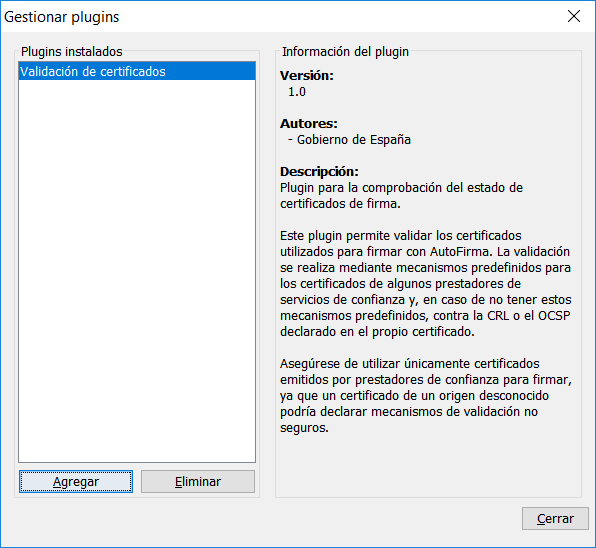

AutoFirma es una herramienta de escritorio con interfaz gráfica que permite la ejecución de operaciones de firma de ficheros locales en entornos de escritorio (Windows, Linux y OS X). También puede utilizarse a través de consola o ser invocada por otras aplicaciones mediante protocolo para la ejecución de operaciones de firma. Esta última funcionalidad puede usarse principalmente mediante el JavaScript de despliegue del Cliente @firma, que permitiría que se utilizase AutoFirma para generar las firmas de un trámite web.
AutoFirma incluye un sistema básico de plugins que permiten modificar el comportamiento de las operaciones de firma y proporcionar nueva funcionalidad cuando se utiliza como aplicación de escritorio. Es decir, los plugins sólo se activan cuando la aplicación se ejecuta en modo gráfico. No afecta a las operaciones de firma cuando se invoca desde otra aplicación (como un navegador web) ni cuando se ejecuta mediante línea de comandos.
Un plugin consiste en una biblioteca Java que extiende una clase concreta y que proporcionar un fichero JSON con la información necesaria para la integración con AutoFirma. El desarrollo del plugin requiere labores de programación, mientras que la instalación y desinstalación de los plugins puede ser llevada a cabo por los usuarios de AutoFirma.
El mecanismo de plugins actual podría modificarse en un futuro para permitir nuevas funcionalidades y opciones de integración.
AutoFirma es una aplicación de Software Libre que se puede usar, a su elección, bajo licencia GNU General Public License versión 2 (GPLv2) o superior o bajo licencia European Software License 1.1 (EUPL 1.1) o superior.
AutoFirma puede descargarse desde el Portal de Administración Electrónica:
https://firmaelectronica.gob.es/Home/Descargas.html
El código fuente de AutoFirma se encuentra disponible desde el repositorio público de GitHub:
https://github.com/ctt-gob-es/clienteafirma
Alcance funcional de los plugins
Un usuario puede instalar, configurar y desinstalar plugins de AutoFirma.
Al instalar un plugin, el fichero de plugin se copia en el directorio de AutoFirma, se ejecuta un proceso de instalación definido por el propio plugin y, a partir de ese momento, el plugin pasa a estar activo y podrá afectar a los procesos de firma y mostrar botones en las pantallas de AutoFirma.
En el proceso de instalación se comprueban los permisos solicitados por el plugin. Un plugin no puede integrarse de un modo concreto si no ha solicitado el permiso necesario para ello en el proceso de instalación.
Los plugins pueden implementar una interfaz gráfica de configuración. En caso de hacerlo, en el mismo diálogo de gestión de plugins, aparecerá un botón de configuración para iniciar esta interfaz. Con ella, el usuario deberá poder establecer los aspectos configurables del plugin.
Al desinstalar un plugin, se ejecuta un proceso de desinstalación definido por el propio plugin, se descarga de memoria y, finalmente, se elimina del directorio de AutoFirma.
Los plugins se integran con AutoFirma de las siguientes formas:
-
Integración en el proceso de firma desde la interfaz gráfica.
-
El plugin puede afectar a las operaciones de firma de dos formas:
-
Preprocesando los datos a firmar.
-
Postprocesando las firmas generadas.
-
-
-
Integración en el proceso de firma iniciada mediante protocolo desde una aplicación externa.
-
El plugin puede afectar a las operaciones de firma de dos formas:
-
Preconfiguración de la operación de firma, pudiendo dividir ésta en varias operaciones.
-
Composición de los datos a devolver a partir de las firmas generadas.
-
-
-
Integración en las pantallas de AutoFirma.
-
Pueden agregarse botones que pueden aparecer en diversas pantallas de la aplicación y asignarles un comportamiento. Los botones pueden aparecer en las siguientes pantallas:
-
Carga de datos
-
Resultado de firma.
-
Resultado de firma masiva.
-
Visualización de datos de firma.
-
-
Puede definirse un menú que aparezca en la barra de menús de la aplicación, definir submenús sobre el mismo y acciones que ejecutar con cada una de sus opciones.
-
-
Nuevos comandos por línea de comandos:
- Se puede agregar nuevos comandos para ejecutarlos desde la línea de comandos.
Integración en el proceso de firma desde la interfaz gráfica
Un plugin puede intervenir en el proceso de firma que se ejecuta desde la interfaz gráfica preprocesando los datos que se van a firmar o postprocesando las firmas generadas. Este plugin es libre de mostrar diálogos gráficos durante su ejecución, ya sean bloqueantes (por ejemplo, cuando se solicite confirmación o un dato al usuario) o no (por ejemplo, un diálogo de espera).
| IMPORTANTE: No existe limitación al número de plugins instalados que pueden efectuar esta operación y su ejecución siempre se realizará según el orden de carga. Es decir, si tuviésemos varios plugins que preprocesasen los datos antes de firmar, el primer plugin que se cargue podrá modificarlos, el segundo recibirá la salida del primero, el tercero la salida del segundo y así sucesivamente. |
|---|
Por regla general, sólo se debería tener instalado un plugin que preprocese los datos o postprocese la firma y debería ser este el que ejecutase todas las operaciones sobre ambos elementos.
Preprocesando los datos que se van a firmar
El método de preprocesado de datos nos permite obtener los datos del fichero que cargó el usuario, devolver a la aplicación los datos que realmente se firmarán y reconfigurar la propia operación de firma. Esto es útil si deseamos restringir o condicionar los datos que se firman en nuestro organismo.
Algunos ejemplos en los que se podría necesitar esta operación serían:
-
Si los documentos PDF que se firmasen en el organismo siempre deben declarar una serie de metadados.
- Se podría implementar el método para que detectase cuando la firma a realizar es PAdES, modificase los PDF que vamos a firmar (previa comprobación de que no incluye firmas anteriores), agregase los metadatos necesarios y lo devolviese modificado.
-
Si se desease que el usuario seleccionase por cada operación si quiere que las firmas CAdES sean implícitas (incluyan los datos) o explicita (no los incluyan).
- Se podría implementar el método para que detectase cuando la firma a realizar es CAdES, mostrarse un diálogo al usuario de consulta al usuario y, según lo respondido, modificase la configuración para que la firma fuese implícita o explícita.
Postprocesado de la firma generada
El método de postprocesado de firma nos permite modificar una firma generada antes de que se guarde a disco. Este mecanismo recibe la firma generada y cierta información sobre ella y devuelve los datos que finalmente se almacenaran.
Algunos ejemplos en los que se podría utilizar esta aplicación serían:
-
Si todas nuestras firmas deben contener un sello de tiempo, independientemente de que no se presenten ante una entidad.
- Se podría implementar un método para tomase la firma generada, conectase contra una TSA, generase un sello de tiempo y lo insertase en la firma. Después devolvería la firma ya con el sello.
-
Si en nuestro organismo todas las firmas se debiesen guardar en un repositorio o gestor en la nube.
- Se podría implementar este método para que preguntase al usuario si desea enviar la firma al gestor. Si el usuario respondiese afirmativamente, se podría enviar la firma al servicio remoto. Ya se envíe o no la firma, se devolvería la propia firma y sería esta la que se guardaría en disco.
Integración en el proceso de firma mediante protocolo
Un plugin puede definir un modo de intervenir en el proceso de firma cuando se ejecuta desde una aplicación externa en una llamada por protocolo. En este caso, puede definir los parámetros de la operación de firma (datos y configuración), incluso realizar múltiples firmas a partir de una única llamada. Los datos resultantes de las operaciones de firma son devueltos al plugin y es este el que define la respuesta al cliente que realizó la operación.
La operación definida por el plugin se ejecutará cuando se cumpla una condición de activación también prefijada por él. Así, si hubiese varios plugin que definiesen un comportamiento a ejecutar durante la firma, sólo se activaría aquel para el que primero se cumpliese la condición de activación.
Preconfiguración de la firma
Una vez se activa, el plugin recibe los datos recibidos para la configuración de la operación (los datos a firmar, el formato, el algoritmo...), así como cualquier parámetro adicional que se haya enviado con la petición y que pueda servir para definir cómo se debe operar. En base a esta configuración, el plugin definirá una serie de configuraciones de firma que son las que realmente se van a aplicar. Esto nos permitiría establecer mediante un plugin una serie de configuraciones de firma preestablecidas o definir múltiples operaciones de firma en una sola llamada a AutoFirma.
Algunos ejemplos en los que se podría necesitar esta operación serían:
-
Su se desease permitir que AutoFirma realizase una operación de firma masiva a raíz de una única llamada:
- Se podrían enviar múltiples datos concatenados en el parámetro de datos, subdividirlos mediante la operación de preconfiguración y aplicar la misma configuración de firma a todos ellos.
-
Si se desease que las operaciones de firma de nuestro organismo fueran homogéneas o que se pudiesen reconfigurar sin necesidad de modificar las aplicaciones web:
- Se podrían incorporar al plugin las configuraciones de firma deseadas y aplicarlas cuando se detecte un parámetro de configuración concreto enviado por la aplicación.
Composición de la respuesta de firma
El método de composición de la respuesta permite definir cuál es el resultado que se devolverá a la aplicación cliente. Para componer este resultado puede utilizarse el conjunto de firmas generada y la configuración de firma inicial. Este dato será procesado por el JavaScript de despliegue con el que se haya hecho la integración. Así pues, es necesario devolver un resultado compatible con el mismo o utilizar un JavaScript propio o modificado que se adapte a la respuesta que se desea devolver.
Algunos ejemplos en los que se podría utilizar esta aplicación serían:
-
Su se desease permitir que AutoFirma realizase una operación de firma masiva a raíz de una única llamada:
- Se podrían componer el resultado con todas las firmas y utilizar un JavaScript de despliegue adaptado para que separe las firmas generadas. En el caso de una firma trifásica, ni siquiera tendría que ser necesaria la adaptación de la respuesta.
-
Si en nuestro organismo debiesen aplicarse medidas de seguridad adicionales sobre las firmas:
- Se podría implementar en este método los mecanismos adicionales de seguridad, como el uso de algoritmos de cifrado seguro a partir de una clave proporcionada por la propia aplicación. De esta forma, la firma viajaría cifrada todo el tiempo y no se descifraría hasta llegar al servidor de destino.
Integración en las pantallas de firma
Botones de acción
Los plugins pueden agregar botones en una barra para tal fin en algunas de las pantallas de AutoFirma. Estos botones pueden ejecutar procesos separados de la propia generación de la firma electrónica y acceder a la información de la pantalla en cuestión.
<
Las acciones asignadas a los botones agregados pueden mostrar diálogos gráficos durante su ejecución, ya sean bloqueantes (por ejemplo, cuando se solicite confirmación o un dato al usuario) o no (por ejemplo, un diálogo de espera). Incluso pueden mostrar un diálogo que permita realizar operaciones completas totalmente independientes del proceso de firma.
Algunos ejemplos de utilidad para esta función serían:
-
Si en nuestro organismo trabajamos con un tipo de fichero concreto, por ejemplo, facturas electrónicas, se podría crear un plugin que agregue un botón a la pantalla de carga de datos y que permitiese al usuario que va a firmar pulsarlo para visualizar los datos cargado de tal forma que simplifique determinar si debe firmarse o no. Siguiendo el mismo ejemplo, se podría mostrar una relación con los conceptos y precios de la factura junto con los datos del proveedor.
-
Si queremos realizar una validación completa de todas nuestras firmas, se podría implementar un plugin que agregue un botón a la pantalla que muestra el resultado de la firma. Al pulsar ese botón se leería la firma y se enviaría a un servicio remoto encargado de validarla.
-
Si quisiésemos agregar una funcionalidad a AutoFirma que nada tiene que ver con la firma (por ejemplo, generación de hashes de ficheros), se podría implementar un plugin que agregue un botón a todas las pantallas que lo permiten y que, al pulsarlo, por ejemplo, muestre un diálogo modal que ofrezca la funcionalidad deseada.
Las pantallas a las que se pueden agregar acciones en botón son:
-
Pantalla de carga de datos
- Permite procesar los datos de entrada y el formato de firma que se va a emplear.
-
Pantalla de resultado de una firma simple.
- Permite procesar la firma generada, el formato de firma empleado, los certificados contenidos por la firma y el certificado utilizado para firmar.
-
Pantalla de resultado de un proceso de firma masiva.
- Permite procesar las firmas generadas, el formato de firma empleado para cada uno de ellos, los certificados contenidos por la firma y el certificado utilizado para firmar.
-
Pantalla del visor de firma.
- Permite procesar la firma mostrada, su formato y el árbol de firmantes contenido en la misma.
Menú
Los plugins permiten crear un menú propio en la barra de menús de la aplicación. Este menú sería visible desde todas las pantallas de la aplicación en las que se muestra la barra.
Las opciones de este menú pueden ser submenús o tener asociadas acciones. Estas acciones permiten ejecutar operaciones independientes. No reciben información de la pantalla que se muestra actualmente en la aplicación como hacen los botones.
Esta funcionalidad está orientada a ampliar el funcionamiento de AutoFirma. Por ejemplo, ha permitido externalizar a un plugin la funcionalidad de cálculo y comprobación de hashes de AutoFirma 1.7. Las operaciones de hashes ahora estarán disponibles a través de las opciones de un menú.
- Vista de la barra de menús sin plugins instalados:
<
- Vista de la barra de menús con el plugin de cálculo de hashes:
<
- Vista de la barra de menús con el menú del plugin de cálculo de hashes desplegado:
<
Nuevos comandos
Los plugins permiten introducir nuevos comandos que un usuario pueda utilizar al ejecutar AutoFirma desde línea de comandos. Una vez se instala el plugin, los nuevos comandos estarán disponibles para su ejecución tanto desde el ejecutable de AutoFirma (en todos los sistemas), como desde AutoFirmaCommandLine (sólo en Windows).
El desarrollador del plugin tiene pleno control sobre la lógica de los comandos implementados y será el encargado de definir toda la funcionalidad, así como el tratamiento que debe hacer de sus parámetros. El desarrollador es libre de definir los parámetros que desee para sus comandos, aunque se recomienda por homogeneidad utilizar los mismos parámetros que los comandos nativos de AutoFirma cuando ya existan para indicar un tipo de parámetro concreto (datos de entrada, formato, etc).
<
Configuración de los plugins
Los plugins puede permitir o no su configuración al usuario. Por ejemplo, un plugin que valide el certificado de firma utilizado contra su Distribution Point (propiedad del propio certificado y en la que se incluye la URL para su validación), podría no necesitar configuración por parte del usuario. En cambio, un plugin que valide firmas contra una plataforma externa de la que el usuario deba configurar sus credenciales sí que lo necesitaría.
Las opciones de configuración de un plugin que lo permita se encuentran en el diálogo de gestión de plugins. En esta pantalla se mostrará un botón para el acceso a las opciones de configuración del plugin.
La interfaz gráfica de configuración deberá proporcionarla el propio plugin y desde esta se podrán definir y configurar las distintas opciones. AutoFirma se encargará de almacenar las propiedades definidas, no será necesario que lo haga el propio plugin, y se las proporcionará a las distintas funciones del plugins (operaciones de preproceso de los datos y postproceso de la firma, acciones asignadas a los distintos botones definidos, etc.). Estas mismas opciones se devolverán a la propia interfaz de configuración cuando se vuelva a abrir para que muestre predefinidas las opciones configuradas.
Permisos de plugins
El sistema de plugins de AutoFirma define una serie de permisos con los que se concede a los plugins permiso para integrarse de cada una de las formas señaladas anteriormente. Los permisos de un plugin se declaran en el fichero plugin.json del plugin, y AutoFirma no permitirá que un plugin se integre de un poco concreto si este modo no estaba declarado expresamente en este fichero.
AutoFirma mostrará al usuario los permisos declarados por el plugin antes de proceder a su instalación y sólo lo instalará si el usuario da su consentimiento.
Ejemplo de diálogo de solicitud de permisos:
<
Los permisos que puede solicitar un plugin son:
-
Instalación: Permiso para implementar los métodos de instalación y desinstalación. Este es el método que permite hacer cambios en el equipo durante la instalación y la desinstalación del plugin.
-
Reinicio: Permiso para reiniciar la aplicación. Al conceder este permiso, tanto finalizar la instalación como la desinstalación, se reiniciará AutoFirma. Esto es necesario para poder aplicar los cambios de algunos modos de integración, como la integración de un nuevo menú.
-
Firma en línea: Permisos para implementar los métodos de preconfiguración y composición de la respuesta de los procesos de firma cuando se solicitan por protocolo.
-
Preprocesado: Permiso para procesar los datos antes de las operaciones de firma realizadas desde la interfaz gráfica.
-
Postprocesado: Permiso para procesar las firmas una vez generadas desde la interfaz gráfica de la aplicación.
-
Nuevos botones: Permisos para agregar botones a la interfaz de la aplicación.
-
Nuevo menú: Permisos para agregar un nuevo menú a la interfaz de la aplicación.
-
Nuevos comandos: Permisos para agregar nuevos comandos ejecutables por línea de comandos.
Desarrollo de plugins
Un plugin de AutoFirma es una biblioteca Java en la que una de sus clases extiende la clase base de plugins. Para extender esta clase, será necesario importar en nuestro proyecto el módulo que contiene las clases base para el uso de los plugins. Un desarrollador puede importar este módulo utilizando Apache Maven y la dependencia:
<dependency>
<groupId>es.gob.afirma</groupId>
<artifactId>afirma-ui-simpleafirma-plugins</artifactId>
<version>1.8.0</version>
</dependency>
AutoFirma es compatible con Java 8 y superiores. En concreto, las distribuciones de 32bits de AutoFirma se incorpora Java 8 y las de 64bits con Java 11. Si deseamos que nuestros plugins sean compatibles con todas las instalaciones de AutoFirma, deberán implementarse para ser compatibles con Java 8.
Actualmente, AutoFirma sólo soporta plugins empaquetados en forma de un único archivo JAR. Los plugins que se implementen deberán incluir todas sus clases y dependencias en un único JAR o implementar por su cuenta un mecanismo de carga de dependencias. Nunca se deben insertar en el JAR del plugin las clases del módulo “afirma-ui-simpleafirma-plugins” ni ninguna otra clase de AutoFirma, ya que estas ya se encontrarán disponibles en la aplicación.
Construir un plugin
Como se ha mencionado, y salvo que se implementen mecanismos de carga propios, un plugin se presenta en forma de un único JAR que contiene todas las clases y recursos que necesita. Ya que en AutoFirma se pueden cargar múltiples plugins simultáneamente y desconocemos donde almacenarán sus recursos, cada plugin debería establecer un nombre de paquete propio y agregar todas sus clases y recursos en dicho paquete.
Una vez importado el módulo, se deberán seguir los siguientes pasos para desarrollar nuestro plugin:
- Crear un fichero plugin.json
Este fichero se agregará al paquete que hayamos definido y contendrá los metadatos de nuestro plugin y referencias a todos los elementos que definen su comportamiento (botones que agrega, diálogo gráfico para su configuración, etc). Este fichero deberá codificarse en UTF-8.
La estructura del JSON contendrá los elementos:
-
info: Este contendrá los datos y la configuración del plugin. Los elementos que albergará son:
-
name: Nombre interno del plugin (sin espacios).
-
title: Nombre legible del plugin.
-
version_code: Opcional. Número natural que identifica la versión del plugin. Por defecto, 1.
-
version: Opcional. Cadena con la versión del plugin en formato libre. Por defecto, “1.0”.
-
authors: Opcional. Lista con el nombre de los autores del plugin.
-
contacts: Opcional. Lista con la información de contacto de los autores.
-
description: Descripción del plugin.
-
configuration_panel: Opcional. Nombre de la clase que implementa el panel de configuración. Si no se indica, no habrá panel de configuración del plugin.
-
-
permissions: Opcional. Listado de nombres de permiso que requiere el plugin. Los permisos disponibles son:
-
INSTALL: Permiso para ejecutar código en la instalación/desinstalación del plugin.
-
RESET: Permiso para reiniciar AutoFIrma tras la instalación/desinstalación. El reinicio se realiza de forma automática.
-
INLINE_PROCESS: Permisos para modificar el procesado de las peticiones realizadas desde el navegador.
-
PRESIGN: Permiso para preprocesar los datos antes de una operación de firma a través de la interfaz de escritorio.
-
POSTSIGN: Permiso para postprocesar las firmas generadas en una operación de firma a través de la interfaz de escritorio.
-
BUTTONS: Permiso para agregar acciones a la interfaz de escritorio a través de botones.
-
MENU: Permiso para agregar un menú con acciones a la interfaz de escritorio.
-
COMMANDS: Permiso para agregar nuevos comandos para usar por línea de comandos.
-
-
inline_processor: Opcional. Nombre de una clase que implementa es.gob.afirma.standalone.plugins.SignDataProcessor. Esta clase puede definir el modo de procesar los datos y la firma en una operación invocada desde un navegador web.
-
buttons: Opcional. Lista de botones que se deberán mostrar en la interfaz de AutoFirma. Cada botón define:
-
title: Opcional. Texto que mostrar en el botón. El botón debería definir este atributo y/o un icono.
-
icon: Opcional. Imagen que mostrar en el botón a modo de icono. El botón debería definir este atributo y/o un texto.
-
tooltip: Opcional. Texto de ayuda que asociar al botón.
-
accesible_description: Opcional. Texto accesible que asociar al botón.
-
window: Ventana en la que mostrar el botón.
-
action: Nombre de la clase que define la acción a realizar por el botón.
-
-
menu: Opcional. Nueva opción que se agregará a la barra de menús de AutoFirma. Puede contener un listado de opciones y submenús. Un menú define:
-
title: Texto del menú. El texto del menú principal es el que se mostrara en la barra de menús de AutoFirma.
-
items: Opcional. Listado de submenús de este. Cada submenú se define igual que un menú.
-
action: Opcional. Nombre de la clase que define la acción a realizar por esta opción de menú. Si se declaró un listado de submenús para este menú, este no podrá tener una acción asociada.
-
-
commands: Opcional. Listado de comandos que se agregaran para su uso por línea de comandos. Por cada uno de ellos se define:
-
name: Nombre del comando.
-
description: Texto descriptivo de la operación.
-
action: Nombre de la clase que implementa el comando.
-
A continuación, se presenta la declaración formal del JSON mediante su esquema (conforme al borrador 7 del documento de definición de esquemas JSON):
{ "$schema": "http://json-schema.org/draft-07/schema#", "definitions": { "info": { "type": "object", "properties": { "name": { "type": "string" }, "title": { "type": "string" }, "version_code": { "type": "integer", "default": 1 }, "version": { "type": "string", "default": "1.0" }, "authors": { "type": "array", "items": { "type": "string" }, "default": [] }, "contacts": { "type": "array", "items": { "type": "string" }, "default": [] }, "description": { "type": "string" }, "configuration_panel": { "type": "string" } }, "required": ["name", "title", "description"] }, "permissions": { "type": "array", "items": { "type": "string", "enum": [ "INSTALL", "INLINE_PROCESS", "RESET", "PRESIGN", "POSTSIGN", "BUTTONS", "MENU", "COMMANDS" ] }, "default": [] }, "button": { "type": "object", "properties": { "title": { "type": "string" }, "icon": { "type": "string" }, "tooltip": { "type": "string" }, "accesible_description":{ "type": "string" }, "window": { "type": { "enum": [ "input", "single_result", "multi_result", "visor" ] } }, "action": { "type": "string" } }, "required": ["window", "action"] } }, "menu": { "type": "object", "properties": { "title": { "type": "string" }, "action": { "type": "string" }, "items": { "type": "array", "items": { "$ref": "#/definitions/menu" }, "default": [] } }, "required": ["title"] }, "command": { "type": "object", "properties": { "name": { "type": "string" }, "description": { "type": "string" }, "action": { "type": "string" } }, "required": ["name", "action"] } "type": "object", "properties": { "info": { "$ref": "#/definitions/info" }, "permissions": { "$ref": "#/definitions/permissions" }, "inline_processor": { "type": "string" }, "buttons": { "type": "array", "items": { "$ref": "#/definitions/button" }, "default": [] }, "menu": { "$ref": "#/definitions/menu" }, "commands": { "type": "array", "items": { "$ref": "#/definitions/command" }, "default": [] } }, "required": ["info"] } |
|---|
Un ejemplo de “plugin.json” sería:
{ "info": { "name" : "validate_certs", "title" : "Validación de certificados", "version_code" : 1, "version" : "1.0", "authors" : [ "Gobierno de España" ], "description" : "Plugin para la comprobación del estado de certificados de firma.<br><br>Este plugin permite validar los certificados utilizados para firmar con AutoFirma. La validación se realiza mediante mecanismos predefinidos para los certificados de algunos prestadores de servicios de confianza y, en caso de no tener estos mecanismos predefinidos, contra la CRL o el OCSP declarado en el propio certificado.<br><br>Asegúrese de utilizar únicamente certificados emitidos por prestadores de confianza para firmar, ya que un certificado de un origen desconocido podría declarar mecanismos de validación no seguros." }, "permissions" : [ "BUTTONS" ], "buttons" : [ { "title" : "Validar certificado de firma", "icon" : "es/gob/afirma/plugin/certvalidation/certificate_16.png", "tooltip" : "Validar el certificado con el que se ha realizado la firma", "accesible_description" : "Valida el certificado utilizado para firmar", "window" : "single_result", "action" : "es.gob.afirma.plugin.certvalidation.ValidateCertAction" }, { "title" : "Validar certificado de firma", "icon" : "es/gob/afirma/plugin/certvalidation/certificate_16.png", "tooltip" : "Validar el certificado con el que se ha realizado la firma", "accesible_description" : "Valida el certificado utilizado para firmar", "window" : "multi_result", "action" : "es.gob.afirma.plugin.certvalidation.ValidateCertAction" } ] } |
|---|
Al instalar este plugin en AutoFirma, su aspecto en el diálogo de gestión de plugins será:
<
- Implementar AfirmaPlugin
Todo plugin deberá tener una clase que herede de AfirmaPlugin. Esta será la clase principal del plugin y deberá encontrarse en el mismo paquete que el fichero “plugin.json”. En esta clase se podrán implementar los siguientes comportamientos:
-
Instalación del plugin:
- Se ejecuta una única vez al importar el plugin en AutoFirma. Si fuese necesario, en él se deben configurar el sistema y preparar los recursos que requiera el plugin para su funcionamiento.
-
Desinstalación del plugin:
-
Se ejecuta una única vez al eliminar el plugin de AutoFirma.
-
En él se deben deshacer las opciones realizadas en el método de instalación.
-
-
Preproceso de los datos
-
Se ejecuta antes de la firma de cada uno de los datos de entrada.
-
Este método permite manipular o realizar operaciones en base a los datos que van a firmarse y devuelve los datos que realmente se firmarán.
-
-
Postproceso de la firma
-
Se ejecuta después de generar una firma electrónica y antes de almacenarla en disco.
-
Este método permite manipular la firma resultante o realizar operaciones en base a ella y devuelve los datos que finalmente se almacenarán en disco. También recibe el formato de firma utilizado y la cadena de certificación del certificado de firma.
-
-
Fin de operación
-
Se ejecuta después de haber finalizado la operación:
-
En el caso de una firma simple, se ejecutará después del postprocesado de la firma.
-
En caso de una firma masiva, se ejecutará una única vez, tras haber postprocesado todas las firmas.
-
-
Puede usarse si se almacena información en el proceso de postfirma que afecte a todas las firmas, para poder restablecer los datos a sus valores iniciales.
- Por ejemplo, en una firma masiva, se podría comprobar en el postprocesado si el usuario ha aceptado manipular la firma de alguna manera. Si aún no se le preguntó, se le pregunta; si ya se preguntó, se hace lo que se decidiera. En el método de fin de operación se eliminaría la respuesta del usuario para que en futuras operaciones se volviese a preguntar.
-
Para saber más sobre cómo implementar los métodos de instalación y desinstalación del plugin, consulte el apartado 4.3 Métodos de instalación y desinstalación.
Para saber más sobre cómo implementar los métodos de preproceso de datos, postproceso de firma y fin de la operación, consulte el apartado 4.4 Métodos de preconfiguración y respuesta de las peticiones de firma
Los plugins permiten definir un mecanismo para tratar las firmas electrónicas solicitadas por una aplicación externa mediante protocolo. Estos métodos, a diferencia de los de prefirma y postfirma no tiene que implementarse en la clase principal del plugin (AfirmaPlugin), sino en una clase independiente que herede de la clase SignDataProcessor.
Para configurar el uso de esta clase, se deberá establecer la propiedad “inline_processor” del fichero “plugin.json”.
La clase define varios métodos abstractos que se deberán implementar:
-
-
-
-
-
-
-
-
-
-
-
-
-
-
boolean checkTrigger(SignOperation operation)Identifica cuando debe activarse la operativa de este plugin. En el parámetro operation se recibe toda la configuración de firma establecida.Si devuelve true, se ejecutarán las funciones preProcess y postProcess sobre los datos de la operación. Si devuelve false, no se ejecutarán y se consultará el criterio del siguiente plugin de la lista.Criterios comunes de activación que pueden usarse son:Se está procesando un dato concreto o con un formato concreto. Por ejemplo:Se ha proporcionado un token de autenticación concreto.Se ha proporcionado una cadena de datos Base64 concatenados con un separador en lugar de un Base 64 único.Se han proporcionado propiedades específicas en el parámetro extraParams. Por ejemplo:Se han proporcionado las propiedades necesarias para la firma visible PDF.Se ha proporcionado una propiedad no recogida por AutoFirma que se utiliza expresamente para la activación de este plugin.Se ha proporcionado un parámetro distinto de los soportados por AutoFirma. Estos parámetros se obtienen a través del método getAnotherParams() del objeto operationList<SignOperation> preProcess(SignOperation operation)Operación de preconfiguración.Esta operación se ejecuta antes de la operación de firma y permite redefinir los parámetros de entrada como un listado de parámetros del mismo tipo. Esto permite transformar una operación de firma en muchas o redefinir los parámetros de la operación.StringBuilder postProcess(List<SignResult> results, SignOperation signOperation) throws EncryptingException, PluginControlledExceptionOperación de composición de la respuesta de la operación.Esta operación se ejecuta después de haber generado los resultados de todas las operaciones de firma definidas.Recibe el resultado de todas las operaciones de firma y la configuración de firma original recibida por la aplicaciónDevuelve la cadena de texto que devolver a la aplicación que solicitó la operación de firma.void setCipherKey(byte[] key)Establece la clave de cifrado proporcionada por la aplicación para que el plugin la aplique como considere en la composición de la respuesta de la operación.boolean isErrorsAllowed()Establece si, al procesar más de una firma, debería interrumpirse la operación cuando falle al menos una de ellas. Para permitir que un plugin modifique la operativa de las operaciones solicitadas por una aplicación cliente, es necesario que declare el permiso INLINE_PROCESS.
Métodos de prefirma y postfirma desde la interfaz gráfica.
Un plugin podría no sobrescribir ninguno de los métodos de AfirmaPlugin si no actúa en ninguno de los procesos listados. En ese caso, la clase aparecerá vacía y la interacción del usuario con el plugin se deberá realizar a través de los botones declarados en “plugin.json”. Un ejemplo de clase de este tipo sería:
public class MiNuevoPlugin extends AfirmaPlugin {
// No se define ningun comportamiento especial para el plugin
}
- Declarar un servicio AfirmaPlugin
Es necesario notificar a AutoFirma cuál de las clases de nuestra biblioteca es la que implementa la clase AfirmaPlugin. Para hacer esto, anunciaremos nuestra clase como servicio creando en el directorio “META-INF/services” del proyecto el fichero “es.gob.afirma.standalone.plugins.AfirmaPlugin”. El contenido de este fichero debe ser el nombre completo de la clase que implementa AfirmaPlugin.
Por ejemplo,
es.gob.afirma.plugin.certvalidation.ValidateCertsPlugin
Estructura del plugin
Una vez se hayan seguido los pasos anteriores para la construcción básica del plugin, la estructura mínima del proyecto debe ser la siguiente:
<
En el diagrama mostrado:
-
X, Y y Z, representan el paquete al que pertenece nuestro plugin y que no debería coincidir con el de ningún otro.
-
MiNuevoPlugin.java representa a la clase que implementa AfirmaPlugin.
-
resources sería un directorio en el que podríamos almacenar los recursos (imágenes, ficheros de propiedades o cualquier otra cosa) que requiera nuestro plugin. Este directorio no tiene porqué existir, podría no haber recursos que almacenar o incluirse estos directamente en la estructura del paquete sin incluir un directorio adicional; podría tener cualquier otro nombre o podrían separarse los recursos en diversos directorios.
En este caso, el contenido del fichero “es.gob.afirma.standalone.plugins.AfirmaPlugin” sería:
X.Y.Z.MiNuevoPlugin
Opciones de configuración
Diversos tipos de plugins podrían permitir al usuario configurar su comportamiento incluso el configurarlos podría ser totalmente necesario para su funcionamiento. Por ejemplo, un plugin podría permitir configurar el algoritmo que utilizará al realizar una operación, mientras que otro podría necesitar que el usuario configurase sus credenciales para acceder a un almacén externo.
La configuración de todos los plugins deberá establecerse desde el diálogo de gestión de plugins. Cuando un usuario seleccione un plugin y este disponga de opciones configurables, se mostrará un botón “Configurar”. Al pulsarlo, se mostrará al usuario un diálogo en el que se mostrarán las opciones configurables.
La apariencia de este diálogo y las opciones que contiene se definirá programáticamente mediante la herencia de la clase ConfigurationPanel. Esta clase es un JPanel sobre el que se deberá construir la apariencia del diálogo de configuración. Nuestra clase deberá ser pública e implementar el constructor por defecto (sin parámetros), en el que se agregarán los distintos componentes gráficos que se requieran para la configuración (cajas de texto, listas de selección, cuadros de verificación, etc.) estructurados en directamente en el panel, en subpaneles o en pestañas según se desee.
La clase ConfigurationPanel deberá además implementar los siguientes métodos:
-
Properties getConfiguration()
-
Este método construirá un objeto Properties en el que almacenará todos los valores configurados asignándoles un nombre de propiedad a cada uno de ellos.
-
El nombre asignado a cada opción de configuración y con el que se guarda en el Properties será el nombre con el que se podrá recuperar el valor durante la ejecución del plugin.
-
Todas las opciones configurables deberían tener una propiedad asignada, incluso si no se estableció un valor para ella, ya que el no hacerlo podría resultar en que se utilicen valores nulos al solicitar las opciones configuradas.
-
Este método se llama al aceptar el diálogo de selección de la configuración y se encarga de guardar todas las propiedades definidas.
-
-
void init(Properties config)
-
Este método recibe un objeto Properties con los valores actualmente asignados a las opciones configurables. Si nunca se les ha asignado un valor, devolverá nulo.
-
En este método se deberían obtener los valores configurados en el objeto y establecerlos en las opciones de configuración de nuestro diálogo gráfico.
-
Las propiedades que definen el valor configurado para cada opción de configuración son las que se le hayan asignado en la llamada a getConfiguration().
-
Este método se llama al pulsar el botón “Configurar” para abrir el diálogo de configuración del plugin.
-
Un ejemplo de implementación de diálogo de configuración en el que se permite la configuración de un cuadro de texto sería la siguiente:
public class MiDialogoConfiguracionPanel extends ConfigurationPanel {
private static final String PROP_NOMBRE_FIRMANTE = "nombreFirmante";
private final JTextField tfNombreFirmante;
public MiDialogoConfiguracionPanel() {
// Establecemos un layout
setLayout(new GridBagLayout());
// Construimos los distintos componentes graficos
this.tfNombreFirmante = new JTextField();
final JLabel lbNombreFirmante = new JLabel("Nombre del firmante:");
lbNombreFirmante.setLabelFor(this.tfNombreFirmante);
// Posicionamos los componentes en el panel
final GridBagConstraints c = new GridBagConstraints();
c.fill = GridBagConstraints.HORIZONTAL;
c.weightx = 1.0;
c.gridy = 0;
add(lbNombreFirmante, c);
c.gridy++;
add(this.tfNombreFirmante, c);
}
@Override
public void init(final Properties config) {
// Inicializamos el campo con el valor previamente configurado o con
// un valor por defecto si no se encontro
String nombre = config.getProperty(PROP_NOMBRE_FIRMANTE, "");
this.tfNombreFirmante.setText(nombre);
}
@Override
public Properties getConfiguration() {
// Creamos el objeto de propiedades y guardamos en el valor del
// campo que permitimos configurar
final Properties config = new Properties();
config.setProperty(PROP_NOMBRE_FIRMANTE, this.tfNombreFirmante.getText());
return config;
}
}
Para poder indicar al plugin cuál es nuestra clase de diálogo de configuración estableceremos el nombre de la clase en la propiedad “configuration_panel” en el apartado “Info” del fichero “plugin.json”.
{
"info":
{
"name" : "miplugin",
"title" : "Inserción del nombre del firmante",
"version_code" : 1,
"version" : "1.0",
"description" : "Plugin de prueba",
"configuration_panel" : "X.Y.Z.MiDialogoConfiguracionPanel"
}
…
Con un fichero “plugin.json” con el del ejemplo, se mostraría la información del plugin y el botón de configuración como sigue:
<
En caso de implementar el diálogo de configuración como en el ejemplo, al pulsar el botón de “Configurar” se mostraría:
<
Acceso a las opciones de configuración
AutoFirma implementa un mecanismo para la recuperación de la configuración del plugin desde cualquier punto de su código. Esto se hará mediante la llamada al método getConfig() de las clases AfirmaPlugin y PluginAction.
Properties getConfig()
Este método devuelve el conjunto de propiedades en el que hayamos almacenado los valores establecidos en nuestro diálogo de configuración.
Así, por ejemplo, desde las acciones de preprocesado de datos, postprocesado de firma o la acción de un botón, podemos hacer una llamada solicitando las opciones de configuración que tenemos establecidas:
@Override
public byte[] postSignProcess(
byte[] signature,
String format,
Certificate[] certChain)
throws PluginControlledException {
String firmante = getConfig().getProperty(
MiDialogoConfiguracionPanel.PROP_NOMBRE_FIRMANTE);
…
}
Métodos de instalación y desinstalación
Los plugins permiten establecer un procedimiento de instalación y desinstalación que preparen el sistema para su funcionamiento y lo devuelvan a su estado original, respectivamente. Estos procedimientos se implementan en la clase principal del plugin, extensión de AfimaPlugin:
-
Instalación del plugin:
- Genera o establece la configuración necesaria en el sistema para el funcionamiento del plugin.
void install() throws PluginControlledException
-
Se ejecuta durante el proceso de importación del plugin en la aplicación.
-
En caso de error irrecuperable, se lanzaría una excepción de tipo PluginControlledException. En ese caso, se mostraría un mensaje de error al usuario, se desharían las tareas de instalación realizadas y se ejecutaría el proceso de desinstalación establecido por el propio plugin.
-
Desinstalación del plugin:
- Deshace las acciones realizadas durante el proceso de instalación, además de eliminar cualquier otro recurso agregado o deshacer las acciones realizadas durante el funcionamiento del plugin.
void uninstall() throws PluginControlledException
-
Se ejecuta durante el proceso de desinstalación de un plugin.
-
En caso de error irrecuperable, se lanzaría una excepción de tipo PluginControlledException. En ese caso, se mostraría un mensaje de error al usuario y se eliminaría el plugin de la aplicación, aunque no se completase el proceso.
Para permitir que un plugin defina acciones a ejecutar durante la instalación y desinstalación, es necesario que declare el permiso INSTALL. Si adicionalmente se desea que se reinicie AutoFirma después de la instalación y desinstalación, deberá declararse el permiso RESET.
Métodos de preconfiguración y respuesta de las peticiones de firma
Los plugins permiten definir un mecanismo para tratar las firmas electrónicas solicitadas por una aplicación externa mediante protocolo. Estos métodos, a diferencia de los de prefirma y postfirma no tiene que implementarse en la clase principal del plugin (AfirmaPlugin), sino en una clase independiente que herede de la clase SignDataProcessor.
Para configurar el uso de esta clase, se deberá establecer la propiedad “inline_processor” del fichero “plugin.json”.
La clase define varios métodos abstractos que se deberán implementar:
-
boolean checkTrigger(SignOperation operation)
-
Identifica cuando debe activarse la operativa de este plugin. En el parámetro operation se recibe toda la configuración de firma establecida.
-
Si devuelve true, se ejecutarán las funciones preProcess y postProcess sobre los datos de la operación. Si devuelve false, no se ejecutarán y se consultará el criterio del siguiente plugin de la lista.
-
Criterios comunes de activación que pueden usarse son:
-
Se está procesando un dato concreto o con un formato concreto. Por ejemplo:
-
Se ha proporcionado un token de autenticación concreto.
-
Se ha proporcionado una cadena de datos Base64 concatenados con un separador en lugar de un Base 64 único.
-
-
Se han proporcionado propiedades específicas en el parámetro extraParams. Por ejemplo:
-
Se han proporcionado las propiedades necesarias para la firma visible PDF.
-
Se ha proporcionado una propiedad no recogida por AutoFirma que se utiliza expresamente para la activación de este plugin.
-
-
Se ha proporcionado un parámetro distinto de los soportados por AutoFirma. Estos parámetros se obtienen a través del método getAnotherParams() del objeto operation
-
-
-
List<SignOperation> preProcess(SignOperation operation)
-
Operación de preconfiguración.
-
Esta operación se ejecuta antes de la operación de firma y permite redefinir los parámetros de entrada como un listado de parámetros del mismo tipo. Esto permite transformar una operación de firma en muchas o redefinir los parámetros de la operación.
-
-
StringBuilder postProcess(List<SignResult> results, SignOperation signOperation) throws EncryptingException, PluginControlledException
-
Operación de composición de la respuesta de la operación.
-
Esta operación se ejecuta después de haber generado los resultados de todas las operaciones de firma definidas.
-
Recibe el resultado de todas las operaciones de firma y la configuración de firma original recibida por la aplicación
-
Devuelve la cadena de texto que devolver a la aplicación que solicitó la operación de firma.
-
-
void setCipherKey(byte[] key)
- Establece la clave de cifrado proporcionada por la aplicación para que el plugin la aplique como considere en la composición de la respuesta de la operación.
-
boolean isErrorsAllowed()
- Establece si, al procesar más de una firma, debería interrumpirse la operación cuando falle al menos una de ellas.
Para permitir que un plugin modifique la operativa de las operaciones solicitadas por una aplicación cliente, es necesario que declare el permiso INLINE_PROCESS.
Métodos de prefirma y postfirma desde la interfaz gráfica
Los métodos de preprocesado de los datos antes de firmarlos a través de la interfaz gráfica, el de postprocesado de la firma antes de almacenarla y el de fin de la operación de firma se implementan en la clase principal del plugin, extensión de AfirmaPlugin:
-
Preproceso de los datos:
- Procesa o actúa sobre los datos a firmar.
byte[] preSignProcess(byte[] data, String format)
throws PluginControlledException
-
Recibe los datos que van a firmarse y el formato de firma que se utilizará.
-
Devuelve los datos que finalmente se firmarán.
-
En caso de error irrecuperable, se lanzaría una excepción de tipo PluginControlledException. En ese caso, se mostraría un mensaje de error al usuario, pero el proceso de firma continuará normalmente.
-
Postproceso de la firma:
- Procesa o actúa sobre la firma recién generada.
byte[] postSignProcess(byte[] signature, String format,
Certificate[] certChain) throws PluginControlledException
-
Recibe la firma generada, el formato de firma utilizado y la cadena de certificación del certificado con el que se ha firmado. La cadena de certificación podría no estar completa si no se encontrasen los certificados emisores en el almacén.
-
Devuelve la firma modificada.
-
En caso de error irrecuperable, se lanzaría una excepción de tipo PluginControlledException. En ese caso, se mostraría un mensaje de error al usuario, pero el proceso continuará normalmente con la firma original.
-
Finalización del proceso de firma:
- Finaliza un proceso de firma simple o masiva, restableciendo lo que sea necesario para permitir una futura operación.
void reset() throws PluginControlledException
- En caso de error irrecuperable, se lanzaría una excepción de tipo PluginControlledException. En ese caso, se mostraría un mensaje de error al usuario, pero la aplicación continuaría funcionando normalmente.
Para permitir que un plugin defina acciones a ejecutar para le preproceso de los datos y el postproceso de la firma, es necesario que declaren los permisos PRESIGN y POSTSIGN, respectivamente.
Botones de acción
Los botones de acción son botones que aparecen en diversas pantallas de AutoFirma y que permiten realizar operaciones con la información cargada en dicha pantalla, como los datos que se van a firmar o la firma que ya se ha generado. Estos botones aparecen ordenados y en serie en una barra de botones situada en la zona inferior de AutoFirma. Al pulsar un botón, se desencadena la opción configurada.
Para el uso de botones de acción en un plugin es necesario realizar los siguientes pasos:
- Implementar la acción del botón
Las acciones de los botones se implementarán en clases Java que hereden de la clase PluginAction. De esta clase se puede sobrescribir el siguiente método para definir su comportamiento:
void start(final Window parent)
Sin embargo, si se desea que nuestra acción utilice los datos cargados en la pantalla de AutoFirma en la que se muestre, nuestra acción deberá heredar de alguna de las clases hija de PluginAction:
-
DataProcessAction: Permite utilizar los datos cargados en AutoFirma.
-
SignatureProcessAction: Permitir utilizar la firma generada o mostrada en AutoFirma y sus certificados.
Según la pantalla en la que deseemos mostrar el botón, se deberá implementar una u otra clase:
-
Pantalla de carga de datos: DataProcessAction.
-
Pantalla con el resultado de una firma simple: SignatureProcessAction.
-
Pantalla con el resultado de una firma masiva: SignatureProcessAction.
-
Pantalla de visualización de datos de firma: SignatureProcessAction.
Al heredar de la clase DataProcessAction se debe sobrescribir el método:
void processData(InputData[] data, Window parent)
Este método recibe los datos de entrada de la pantalla y la ventana que padre en la que se muestran.
-
El listado de objetos de datos de entrada. Este listado contendrá un único elemento en las operaciones de firma simple y varios en las operaciones de firma masiva. Cada uno de estos objetos nos da acceso a:
-
El fichero de datos cargado.
-
El formato de firma con el que se firmarían esos datos.
-
-
La ventana padre nos sirve para utilizarla como ventana padre de cualquier diálogo gráfico que deseemos mostrar.
Al heredar la clase SignatureProcessAction se debe sobrescribir el método:
void processSignatures(OutputData[] outputs, X509Certificate signingCert,
Window parent)
Este método recibe los datos de salida de la pantalla, el certificado de firma utilizado y la ventana que padre en la que se muestran los datos.
-
El listado de objetos de datos de salida. Este listado contendrá un único elemento en las operaciones de firma simple y varios en las operaciones de firma masiva. Cada uno de estos objetos nos da acceso a:
-
El fichero en el que se encuentra la firma. En caso de no existir, la firma debió finalizar con errores.
-
Si la firma terminó correctamente o no.
-
El formato de la firma.
-
Los certificados contenidos en la firma, que será el certificado utilizado en la firma (si se ha firmado) y los certificados de firmas previas.
-
-
El certificado de firma nos permite saber con qué certificado ha firmado el usuario. Este parámetro podría llegar nulo si el usuario no hubiese firmado, por ejemplo, porque nos encontremos en la pantalla de visualización de firmas, en cuyo caso se cargó una firma que ya estaba hecha y no una que acabe de hacer el usuario.
-
La ventana padre nos sirve para utilizarla como ventana padre de cualquier diálogo gráfico que deseemos mostrar.
Por ejemplo, si quisiéramos crear un plugin que permitiese validar los certificados de firma, podríamos crear una clase que herede de SignatureProcessAction, que implemente el método processSignatures(), que tomase los certificados de la firma, los enviase a validar en base a su Distribution Point y mostrase un mensaje al usuario con el resultado de la validación.
- Definir el aspecto del botón y la ventana en la que aparecerá
Una vez creada la acción del botón deberá registrarse en el plugin para indicar dónde aparecerá y su aspecto. Esto se hará desde el apartado “buttons” del fichero plugin.json.
Para cada uno de los botones se podrá definir los siguientes atributos:
-
title: Opcional. Texto que mostrar en el botón. El botón debería definir este atributo y/o un icono.
-
icon: Opcional. Imagen que mostrar en el botón a modo de icono. El botón debería definir este atributo y/o un texto.
-
tooltip: Opcional. Texto de ayuda que asociar al botón.
-
accesible_description: Opcional. Texto accesible que asociar al botón para ser leído por lectores de pantalla. Su uso está especialmente indicado cuando el botón muestra un icono y no texto.
-
window: Ventana en la que mostrar el botón. Este atributo debe contener uno de los siguientes valores:
-
input: El botón se mostrará en la pantalla de carga de datos.
-
single_result: El botón se mostrará en la pantalla de resultado de una operación firma simple.
-
multi_result: El botón se mostrará en la pantalla de resultado de una operación de firma masiva.
-
visor: El botón se mostrará en la pantalla en la que se visualizan los datos de la firma a través de la opción “Ver firma” o al abrir la firma desde el sistema operativo.
-
-
action: Nombre de la clase que define la acción a realizar por el botón. Esta clase debe heredar de PluginAction o de alguna de las clases que herede de ella.
Por ejemplo, la subestructura JSON para definir un único botón que aparecería en la ventana del resultado de una firma simple sería:
…
"buttons" : [
{
"title" : "Validar certificado de firma",
"icon" : "es/gob/afirma/plugin/certvalidation/certificate_16.png",
"tooltip" : "Validar el certificado con el que se ha realizado la firma",
"accesible_description" : "Valida el certificado utilizado para firmar",
"window" : "single_result",
"action" : "es.gob.afirma.plugin.certvalidation.ValidateCertAction"
}
]
…
Si se desease que el botón apareciera en varias de las pantallas admitidas sería necesario declararlo múltiples veces en el fichero plugin.json.
Debe recordarse que, si se desean utilizar los datos disponibles en una pantalla, nuestra acción deberá heredar de una clase concreta para esa pantalla (DataProcessAction, SignatureProcessAction…) ya que es la que recoge esos datos de la pantalla. Consulte en el paso 1 de este mismo apartado la acción que deberá heredarse para poder utilizar los datos de cada una de las pantallas que lo admiten.
En caso de querer realizar una misma acción desde diversas ventanas y que los datos de entrada no sean necesarios, podríamos implementar nuestra clase de acción heredando directamente de la clase PluginAction.
- Otorgar el permiso para la integración de botones en la interfaz
En el fichero de declaración del plugin (plugin.json), se deberá declarar el permiso BUTTONS.
Menú de opciones
Un plugin puede agregar un único menú a la barra de menús de la aplicación. Este menú puede definir varios submenús y/u opciones de menú con acciones definidas. Los elementos del menú aparecen con el orden en que se declararon en el fichero de configuración del plugin. Cada una de las opciones del menú puede ser un submenú con nuevas opciones o tener declarada una acción a ejecutar.
Para el uso de las opciones de menú en un plugin es necesario realizar los siguientes pasos:
- Implementar las acciones de las opciones del menú y sus submenús
Las acciones de las opciones de menú se implementarán en clases Java que hereden de la clase PluginAction. De esta clase se puede sobrescribir el siguiente método para definir su comportamiento:
void start(final Window parent)
Este método recibe como parámetro de entrada la ventana de AutoFirma para servidor como componente padre sobre el que mostrar cualquier diálogo gráfico que sea necesario.
Por ejemplo, si quisiéramos que nuestro plugin mostrase un diálogo al pulsar sobre alguna de sus opciones de menú, podríamos crear una clase que herede de PluginAction, implemente el método start() y en él construya y muestre el diálogo.
- Definir la estructura y las opciones del menú
Una vez creadas todas las acciones del menú, deberemos definir la estructura del mismo. Esto se hará desde el apartado “menu” del fichero plugin.json.
Definiremos el atributo “menu” con un listado de elementos. Cada elemento declarará un atributo “title” en el que se indicará el texto que se mostrará en esa opción de menú. A su vez, cada elemento deberá declarar uno de los siguientes atributos:
-
items: Se usará cuando se desee que la nueva opción sea un submenú. Estos atributos declararán un nuevo listado de elementos de menú.
-
action: Se usará cuando se desee que sea la nueva opción tenga una acción asociada. Estos atributos declararán el nombre de la clase que implementa la acción que se desea desencadenar con esa opción.
Por ejemplo, la subestructura JSON para definir un menú con dos submenús y cada uno de ellos con dos opciones sería:
… "menu": { "title": "Huellas digitales", "items": [ { "title": "Fichero", "items": [ { "title": "Calcular huella digital", "action": "es.gob.afirma.hash.CalculateHashFileAction" }, { "title": "Comprobar huella digital", "action": "es.gob.afirma.hash.CheckHashFileAction" } ] }, { "title": "Directorio", "items": [ { "title": "Calcular huella digital en directorio", "action": "es.gob.afirma.hash.CalculateHashDirAction" }, { "title": "Comprobar huella digital en directorio", "action": "es.gob.afirma.hash.CheckHashDirAction" } ] } ] }, … |
|---|
- Otorgar el permiso para la integración de botones en la interfaz
En el fichero de declaración del plugin (plugin.json), se deberá declarar el permiso MENU.
Comandos
Un plugin puede agregar múltiples comandos a AutoFirma para que puedan ser ejecutados por línea de comandos. Estos comandos pueden implementar la funcionalidad que se desee, aunque su finalidad suele ser la de responder alguna de las siguientes necesidades:
-
Permitir que un usuario calcule un resultado a través de la terminal de comandos del sistema.
-
Permitir que una aplicación externa se valga de AutoFirma para ejecutar una de las operativas que esta implementa. Esto puede ser mediante llamadas directas a la aplicación o mediante scripts del sistema.
El sistema de plugin proporciona el modo de que los comandos agregados a AutoFirma mediante plugins se listen junto al resto de comandos. Sin embargo, cualquier acción o texto de ayuda propio del comando deberá ser gestionado por el propio plugin.
Para el uso de las opciones de menú en un plugin es necesario realizar los siguientes pasos:
- Implementar las acciones de los comandos
Las acciones de los comandos se implementarán en clases Java que hereden de la clase PluginCommandAction. De esta clase se deben implementar los siguientes métodos para definir su comportamiento:
- Constructor por defecto. Este constructor sin parámetros debería llamar al constructor de la clase padre que recibe una cadena y le debería pasar el propio nombre del comando. Por ejemplo, si mi clase de acción se llamase MiAction y se debiese ejecutar cuando se usase el comando “micomando”, el constructor sería:
public MiAction() {
} |
|---|
-
Método: String getHelpText()
-
Este método debería devolver una cadena de ayuda con la sintaxis que admite el comando y una explicación sobre los distintos parámetros de configuración.
-
A modo orientativo, cuando AutoFirma muestra la sintaxis de un comando lo hace mediante un texto con la siguiente forma:
-
Sintaxis: ··AutoFirma·COMANDO·SINTAXIS-·DESCRIPCION Parámetros: ··PARAMETRO1(DESCRIPCION_PARAMETRO1) ··PARAMETRO2(DESCRIPCION_PARAMETRO2) … |
|---|
En la sintaxis anterior, los puntos a media altura simbolizan espacios y las flechas a la derecha simbolizan tabuladores. La cantidad de tabuladores necesaria para alinear los elementos puede variar según la longitud de los textos.
Los elementos incluidos en la estructura anterior son:
-
COMANDO: Nombre del comando.
-
SINTAXIS: Estructura de la sintaxis (opciones parámetros)
-
DESCRIPCION: Descripción del comando
-
En caso de que hubiese varios formatos de sintaxis, se podría repetir esta línea con los distintos formatos.
-
PARAMETROX: Identificador del parámetro.
-
DESCRIPCION_PARAMETROX: Descripción de la funcionalidad del parámetro.
-
Método: String process(String[] args) throws PluginControlledException
-
Este método recibe como parámetro el listado de argumentos proporcionado en la llamada a AutoFirma. Los parámetros recibidos no contendrán el nombre del ejecutable de AutoFirma o el propio comando ejecutado, sólo los parámetros que este recibió.
-
La excepción PluginControlledException se debería lanzar cuando falle la ejecución del comando. Se mostrará al usuario el mensaje incluido en esta excepción.
-
El plugin tiene control total sobre su comportamiento, aunque se recomienda seguir las siguientes directrices por homogeneidad con el resto de los comandos de Autofirma:
-
Si el primer argumento recibido se corresponde con la cadena “-help” o si el comando recibe un conjunto de parámetros no válidos, se debería llamar a getHelpText() para devolver el texto de ayuda.
-
Utilizar los mismos parámetros que el resto de los comandos de AutoFirma. Algunos ejemplos son:
-
“-i” y “-o” para designar el fichero de entrada y salida.
-
“-xml” para determinar que la salida se estructure en forma de XML.
-
“-gui” si se desea que el comando utilice interfaz gráfica para solicitar datos.
-
-
-
- Declarar los comandos
Una vez definido el comportamiento de los comandos, deberemos declararlos en el fichero plugin.json.
Los comandos se definirán bajo un nuevo apartado “commands” en el que se listarán los nuevos comandos. De cada uno de los comandos deberemos definir los atributos:
-
name: Nombre del comando que se deberá usar por línea de comandos.
-
description: Descripción del comando (se mostrará al ejecutar la ayuda de AutoFirma por línea de comandos).
-
action: Nombre de la clase que hereda de PluginCommandAction e implementa la lógica del comando.
Una subestructura JSON de ejemplo que defina dos comandos podría ser la siguiente:
… "commands": [ { "name": "createdigest", "description": "Creación de huellas digitales con interfaz gráfica", "action": "es.gob.afirma.plugin.hash.command.CreateHashCommand" }, { "name": "checkdigest", "description": "Comprobación de huellas digitales con interfaz gráfica", "action": "es.gob.afirma.plugin.hash.command.CheckHashCommand" } ], … |
|---|
- Otorgar el permiso para agregar nuevos comandos a la aplicación
En el fichero de declaración del plugin (plugin.json), se deberá declarar el permiso COMMANDS.
Empaquetado de los plugins
Los plugins deben distribuirse en forma de un único archivo JAR con toda la operativa del plugin en su interior. En caso de tener dependencias con otras clases no incluidas en AutoFirma, deberán importarse en el propio archivo. En caso de tener dependencias con clases de AutoFirma, estas no deberían incluirse en el JAR.
Firma de los plugins
Los plugins podrán firmarse mediante el proceso de firma del JAR que lo integra. La firma del JAR se realizará conforme a los requisitos establecidos por Oracle:
https://docs.oracle.com/javase/tutorial/deployment/jar/signing.html
Antes de proceder a la instalación de un plugin, AutoFirma comprueba su firma. Durante esta comprobación pueden surgir tres situaciones distintas:
-
El plugin está correctamente firmado. En ese caso, se le indicará al usuario por quién está firmado el plugin según el certificado utilizado. Además, se le permitirá extraer el certificado de firma por si el usuario quiere validar el certificado o realizar comprobaciones adicionales.
- AutoFirma no comprueba la confianza en el certificado firmante.
-
El plugin no se encuentra firmado. En ese caso, se indica la situación al usuario.
-
La firma del plugin presenta errores. En ese caso, se informa al usuario del error.
Ejemplo de diálogo con la información de la firma de un plugin:
<
En todos los casos el usuario puede continuar el proceso de firma del plugin indicando si confía o no en el mismo.
Preguntas y respuestas
¿Es posible realizar la instalación masiva de un plugin en los equipos de mis usuarios?
No existe un mecanismo particular para la instalación masiva de plugins de AutoFirma. Para realizar esto, sería necesario copiar al equipo de los usuarios objetivos el fichero con el plugin y modificar el fichero con la relación de plugins instalados.
El directorio de instalación de los plugins varia de un sistema a otro:
-
Directorio Windows:
- %ALLUSERSPROFILE%/AutoFirma
-
Directorio Linux:
- ~/AutoFirma.
-
Directorio macOS:
- ~/Library/Application Support/AutoFirma
En esos directorios se crea un subdirectorio “plugins” y dentro del mismo se sitúa un fichero con el listado de plugins instalados (installed) y un directorio por cada plugin. Para instalar programáticamente cada plugin es necesario:
-
Crear dentro del directorio “plugins” un subdirectorio con el nombre interno del plugin que deseamos instalar (el nombre indicado en la propiedad “name” de su “plugin.json”).
-
Copiar el JAR del plugin al directorio creado para el mismo.
-
Agregar al fichero “installed” una nueva línea con el nombre del plugin instalado y su número de versión (tal como se indica en la propiedad “version_code” de su “plugin.json”).
La estructura resultante sería:
<
El contenido del fichero “installed”, en este caso, podría ser:
validate_certs:1
<
Esta obra está bajo una licencia Creative Commons Reconocimiento-NoComercial-CompartirIgual 3.0 Unported.